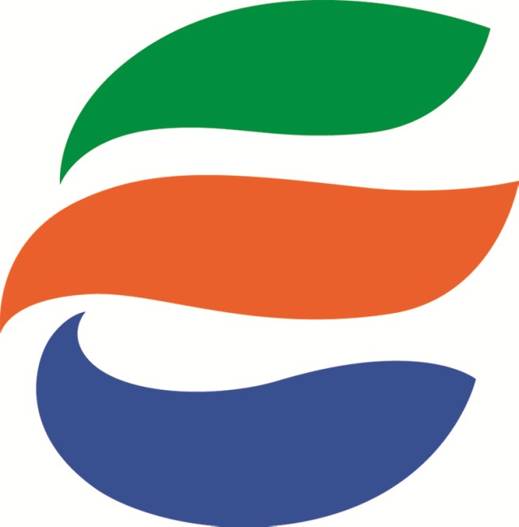

わ ： 我らのふるさと越前市 市章はEの形だよ
一言でいうと？
Eをモチーフにした越前市のシンボル

平成17年10月1日制定された、酒井一さんによるデザイン。
越前(Echizen)の頭文字「E」をモチーフにしています。
どんな意味があるの？
越前市の将来像を表している
太く流れるようなラインは、かつて越前市の国府が置かれて以来、積み重ねられてきた歴史、伝統、文化そして豊かな自然を、また、越前市の将来像である「交流拠点都市」「生活快適都市」「伝統文化都市」を表現しています。
・上の緑のラインは、環境と共生した「生活快適都市」のイメージ「自然」を表現
・中のオレンジのラインは、豊かな心、郷土の心を育む「伝統文化都市」のイメージ「温かさ」を表現
・下の青いラインは、自立と活気ある「交流拠点都市」のイメージ「発展性」を表現
越前市のマークですが、「E」がモチーフになっているとは初めて知りました！いわれてみればEの形に見えるかも…。絵札にするときは周りに何か付け足そうかとも考えたのですが、シンプルにすることで逆に目立ったので結果オーライかなと思っています。